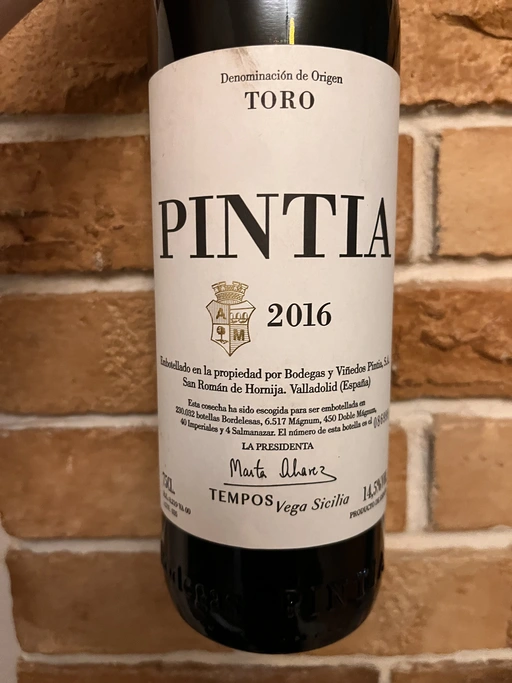
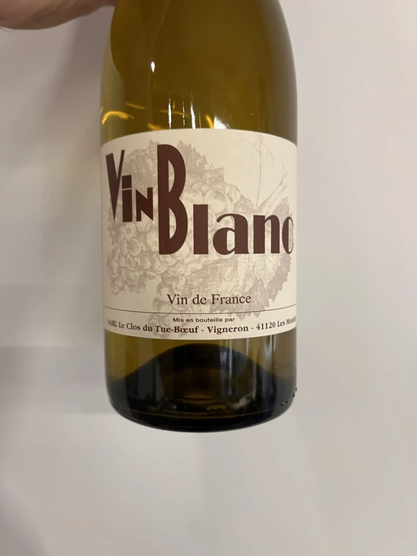
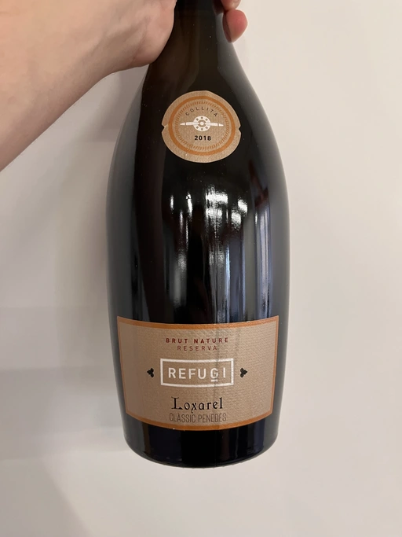
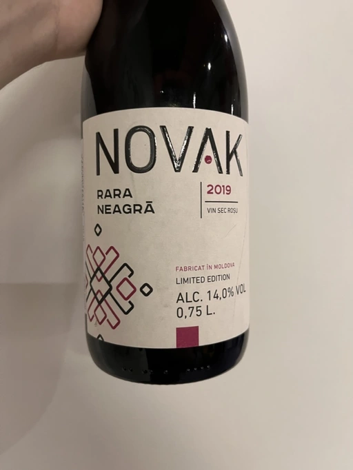
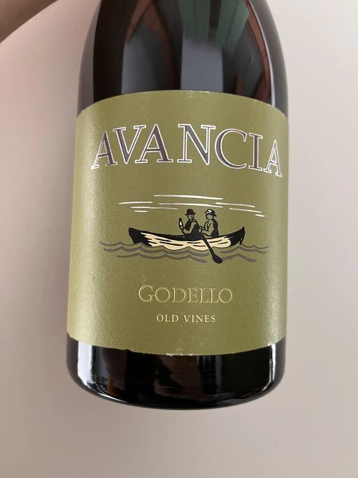
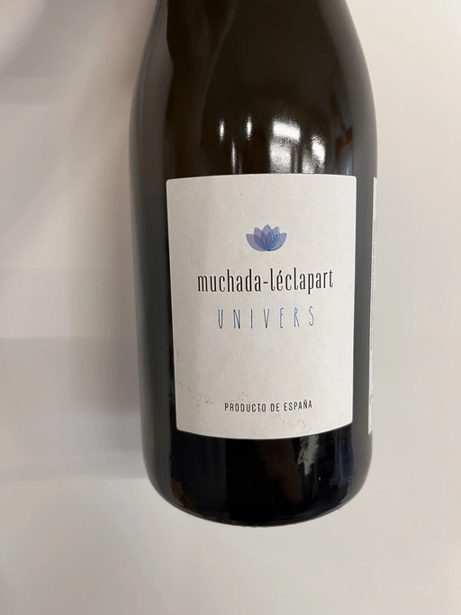
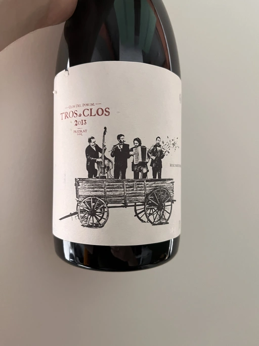
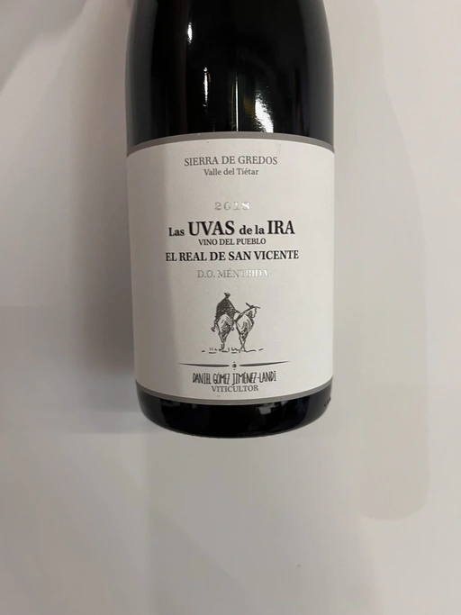
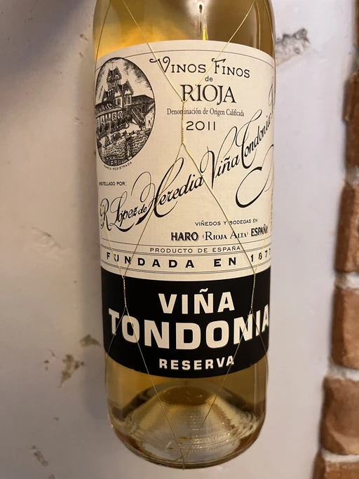
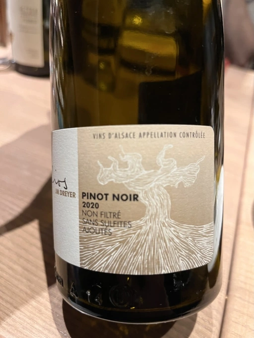

- Type
- Red Still, Dry
- Producer
- Vega Sicilia
- Vintage
- 2016
- Location
- Spain, Toro DO
- Grapes
- Tempranillo
- Alcohol
- 14.5
- Sugar
- 1.6
- Price
- 1947 UAH
- Cellar
- N/A
Ratings
2022-10-25 - 8.00
The biggest disappointment of the evening. It’s good, but I expected more from this luxury brand. Rich fruit-forward bouquet with liquorice root, dark chocolate, vanilla and spices. Full-bodied with mature tannin, it’s round and lazily powerful with a long and warm aftertaste.
Wine #7 on A bit of Spain event.
Related

Clos du Tue-Boeuf
Vin Blanc - 2021

Loxarel
Refugi Brut Nature Reserva - 2018

Novak
Rară Neagră - 2019

Avancia
Godello - 2020

Muchada-Léclapart
Univers - 2017

Portal del Priorat
Tros De Clos - 2013

Daniel Gómez Jiménez-Landi
Las Uvas de la Ira - 2018

R. López de Heredia
Viña Tondonia Blanco Reserva - 2011

J.M Dreyer
Elios Pinot Noir - 2020